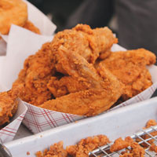

Not is our food good, it's also good-looking! Our patrons often stop to admire our fare with a quick Instagram before digging in. We've collected a few of our favorite shots here.
We start our day at the crack of dawn to bake our own muffins, bread, and dinner rolls. Loaves not used that day are donated to the local food shelter.

People come from all over to enjoy our lovingly made burgers. We grind our own locally-sourced organic beef and turkey so you know it's fresh and free from fillers and other nonsense. Go for one of our creative topping combos or stick with the classics.

Our chef works with local fisherman to pick the freshest the sea has to offer for our daily seafood special. Our Roast Cod Caponata with Roasted Potatoes is an old favorite with our regulars.

Enjoy tender, juicy chicken prepared fresh and seasoned to perfection. From classic comfort flavors to creative chef-inspired dishes, our chicken entrees are made with quality ingredients and cooked to satisfy.

Golden-cut fries cooked fresh until crisp and lightly seasoned for irresistible flavor. Perfect as a side or snack, they pair well with nearly everything on the menu.

A refreshing blend of parsley, tomatoes, and grains tossed with bright lemon and olive oil. Light, vibrant, and full of fresh flavor, it makes a perfect complement to any meal.